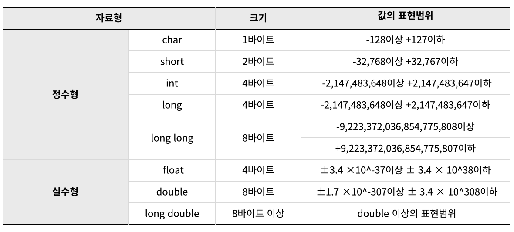
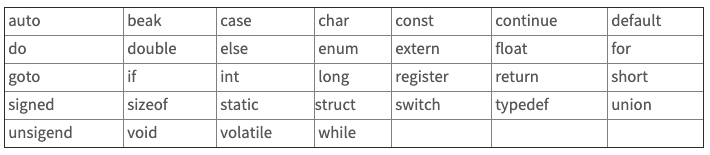

변수와 상수, 그리고 기본 자료형
C언어의 기본 자료형

C의 기본자료형은 크게 "정수형", "실수형" 으로 분류됩니다.
이렇게 분류를 하는 이유는 데이터의 크기에 따라 적절한 자료형을 사용함으로써, 메모리를 효율적으로 사용하기 위함입니다.
기본적으로 자료형은 "부호가 있는" 상태로 사용되며, 이를 signed 자료형이라 부릅니다.
이 반대의 개념으로 "부호가 없는" unsigned 자료형이 있습니다.
기본자료형을 "unsigned"로 사용하실려면, 자료형 앞에 "unsiged" 키워드를 추가해 주시면 됩니다.
!) 실수형에는 unsigned 가 사용될 수 없습니다.
unsigned int a;
변수(Variable)란?
변수(Variable)는 쉽게 설명하면 "데이터를 메모리에 담아놓는 그릇"으로 표현할 수 있습니다.
변수는 하나의 자료형과 값을 가지며, 그 그릇의 내용의 변경을 허용하는 변하는 수를 의미합니다.
자료형 변수이름;
int a;
상수(Constants)란?
상수(Contants)란 프로그램이 실행되는 동안 값이 고정되어 변경할 수 없는 수를 의미합니다. (혹은 메모리공간) 변수와 같이 선언시 자료형과 상수이름을 정하기 때문에, 한번 정의하면 변경할수 없도록 제한하는 변수와 의미가 같습니다. 상수의 선언은 아래와 #define과 const키워드를 사용합니다.
#define PI 3.14 // 전처리기에서 상수 정의
const float pi = 3.14f; // 소스코드에서 상수정의
변수/상수명 명명규칙
변수의 이름은 영문자(대소문자), 숫자, 언더스코어(_)로만 구성됩니다.
변수의 이름은 숫자로 시작될 수 없습니다.
변수의 이름 사이에는 공백을 포함할 수 없습니다.
변수의 이름으로 C언어에서 미리 정의된 키워드(keyword)는 사용할 수 없습니다.
c언어의 키워드

</br>